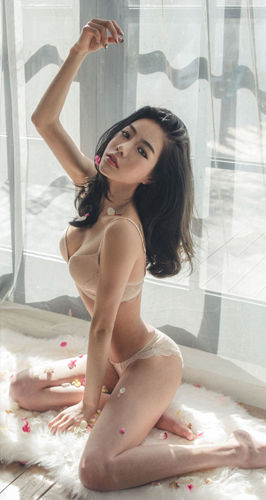
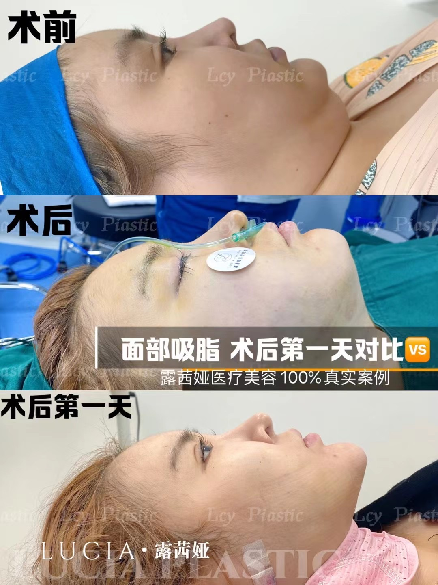
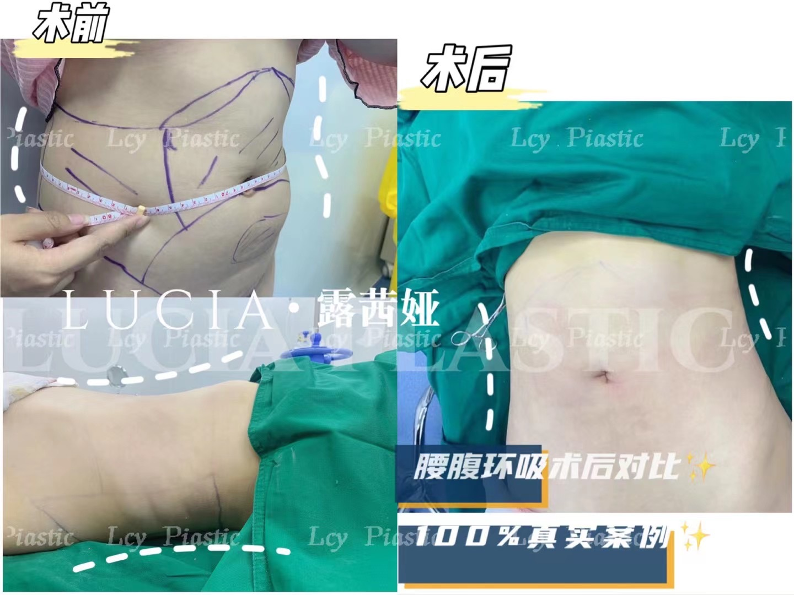
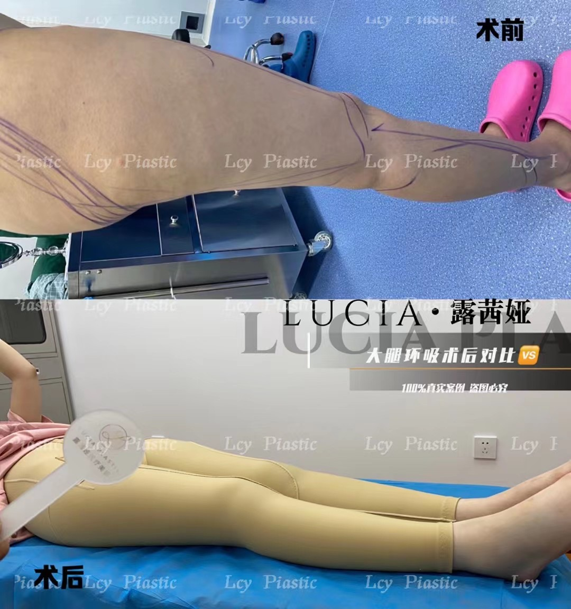
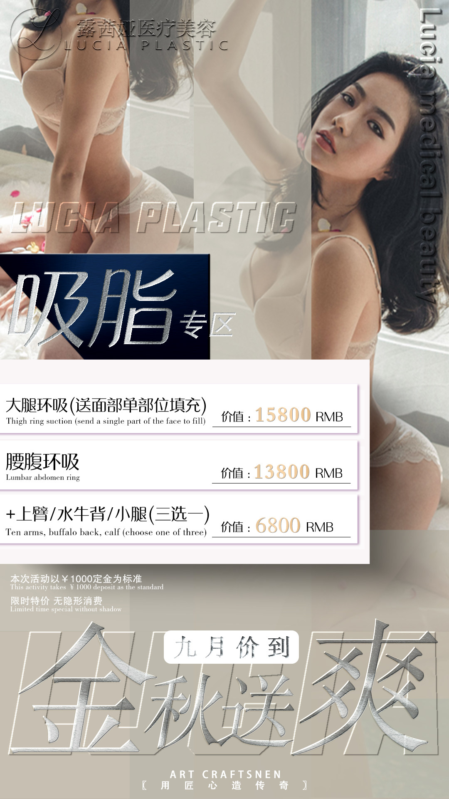

吸脂：胖，真的是一切丑的开端！看看那些高颜值的明星就知道了~
夏季不减肥，冬天徒伤悲
看着那些身材好的人，穿什么都好看
地摊货也能穿出大牌感
再看看自己，唉。。
总有些事情提醒你
这个世界对胖子的残忍
胖，真的是一切丑的开端
即使穿同样的衣服
胖的人穿的臃肿似大妈
而且颜值一跌到底
再看看娱乐圈明星颜值够高吧
但是一胖还是毁所有
无论男女都逃不过
看看小李子和霉霉就知道了
高颜值认证的明星尚且如此
我们就更加惨不忍睹了！

（你，是否也有这些困扰？）
很多妹子为了减掉身上的赘肉
可是耗费了不少时间金钱和精力
各种减肥产品试了个遍
但就是一点效果都没有还有副作用
导致越来越胖

那怎么才能轻松减掉身上的赘肉呢？
今天来给大家推荐一个减肥方法
那就是

水动力吸脂

水动力吸脂的原理，是利用超声波、高频电场等物理手段将脂肪击碎，再通过皮肤小切口，将吸脂管插入皮下脂肪层，利用负压的吸力，将人体局部堆积的皮下脂肪去除，以达到减肥及改善体形的目的。

独特的吸脂技术，使得吸脂区和非吸脂区没有阶梯过渡，外观流线顺滑，术后皮肤不松弛，光滑有弹性。
水动力吸脂优势

1、效果好
水动力吸脂利用轻柔水流形成的水刀，全面的将多余脂肪分散、吸出，有更高的效率。
2、痛苦少
水动力技术较为先进，配合麻醉能无痛渗透，操作时的疼痛感也会降低。
3、损害少
螺旋式水刀作用时，只有微创伤口，能够有效的避开血管和神经末梢，只选择性的针对于脂肪组织，对其他组织的损害较少。
4、恢复快
微创吸脂，不伤害除脂肪外的其他组织，手术后恢复快，不影响正常工作和生活。
5、安全性高
水动力吸脂仅用少量的麻醉剂，减少了药物在人体内的滞留时间和潜在药物交互作用，术中术后减少了出现肿胀现象的可能。
水动力吸脂适用范围

全身肥胖，臀部、胳膊、面部、腰腹、大腿、小腿等局部肥胖，体内脂肪过多，想要迅速改善形体的人。
（面部吸脂）

（腹部吸脂）

（腿部吸脂）


露茜娅.Lucia
金 秋 送 爽
（9月价到）

露茜娅医疗美容 @ Lucy her